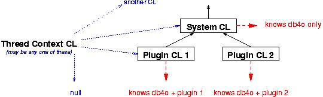

16. Classloader issuesDb4o needs to know its own classes, of course, and it needs to know the class definitions of the objects it stores. (In Client/Server mode, both the server and the clients need access to the class definitions.) While this usually is a non-issue with self-contained standalone applications, it can become tricky to ensure this condition when working with plugin frameworks, where one might want to deploy db4o as a shared library for multiple plugins, for example. 16.1. Classloader basicsClassloaders are organized in a tree structure, where classloaders deeper down the tree (usually) delegate requests to their parent classloaders and thereby 'share' their parent's knowledge. A typical situation might look like this:  An in-depth explanation of the workings of classloaders is beyond the scope of this tutorial, of course. Starting points might be found here: http://www.javaworld.com/javaworld/javaqa/2003-06/01-qa-0606-load.html http://java.sun.com/developer/technicalArticles/Networking/classloaders/ http://java.sun.com/products/jndi/tutorial/beyond/misc/classloader.html 16.2. ConfigurationDb4o can be configured to use a user-defined classloader.
This line will configure db4o to use the provided classloader. Note that, as with most db4o configuration options, this configuration will have to occur before the respective database has been opened. The usual ways of getting a classloader reference are: - Using the classloader the class containing the currently executed code was loaded from. (this.getClass().getClassLoader()) - Using the classloader db4o was loaded from. (Db4o.class.getClassLoader()) - Using the classloader your domain classes were loaded from. (SomeDomainClass.class.getClassLoader()) - Using the context classloader that may have been arbitrarily set by the execution environment. (Thread.currentThread().getContextClassLoader()). To choose the right classloader to use, you have to be aware of the classloader hierarchy of your specific execution environment. As a rule of thumb, one should configure db4o to use a classloader as deep/specialized in the tree as possible. In the above example this would be the classloader of the plugin db4o is supposed to work with. 16.3. Typical EnvironmentsIn your average standalone program you'll probably never have to face these problems, but there are standard framework classics that'll force you to think about these issues. 16.3.1. Servlet containerIn a typical servlet container, there will be one or more classloader responsible for internal container classes and shared libraries, and one dedicated classloader per deployed web application. If you deploy db4o within your web application, there should be no problem at all. When used as a shared library db4o has to be configured to use the dedicated web application classloader. This can be done by assigning the classloader of a class that's present in the web application only, or by using the context classloader, since all servlet container implementations we are aware of will set it accordingly. You will find more detailed information on classloader handling in Tomcat, the reference servlet container implementation, here: http://jakarta.apache.org/tomcat/tomcat-4.1-doc/class-loader-howto.html 16.3.2. EclipseEclipse uses the system classloader to retrieve its core classes. There is one dedicated classloader per plugin, and the classloader delegation tree will resemble the plugin dependency tree. The context classloader will usually be the system classloader that knows nothing about db4o and your business classes. So the best candidate is the classloader for one of your domain classes within the plugin. 16.4. Running without classesRecently db4o has started to learn to cope with missing class definitions. This is a by-product of the work on our object manager application. However, this feature is still quite restricted (read-only mode, etc.), incomplete and is under heavy development. If you like to play with this feature and help us with your feedback to enhance it, you are welcome, but we strongly recommend not to try to use this for production code of any kind. -- generated by Doctor courtesy of db4objects Inc. |